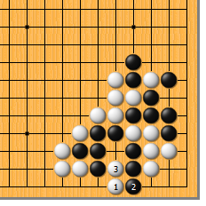
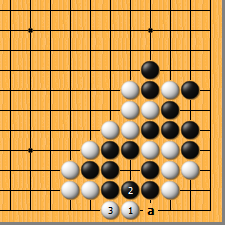
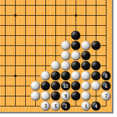

|  |  | |
| 图1 白1点，正中黑的要害，黑顿时失去弹性。黑2如挡，白3冲，对杀白胜。1位是双方的要点，千万记住！ | 图2 白1点时，黑2如做眼，白3拉回即可。黑2如于3位遮断，白或2位冲，或a位退，怎么下都行。
| |
|  | 您的高见 | |
| 图3 白1如果立，黑2当然占住要点，已然不败。白3再立，黑4靠是角上这种形状的要点！接下来，白5紧气，黑6扳，白7先扳，白9再扑，总算双活。白的失败不言而喻。 |